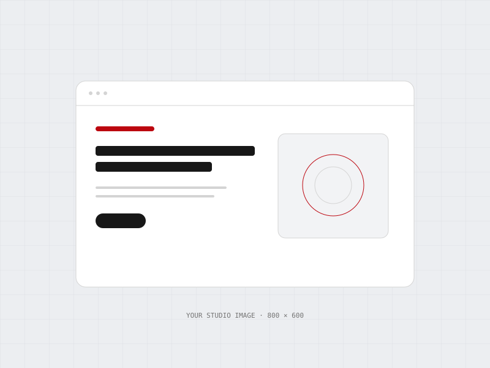

Start with people
Understand the audience before deciding what to say or where to say it.
Aitia Media is a creative practice connecting design, digital marketing, technology, and B2B growth.
We see the whole picture.
The brand. The audience.
The experience between them.
From a visual identity to the website, content, and campaigns behind it, we bring the moving pieces into a shared direction.
Our approach starts with understanding your business. Then we research the audience, shape the strategy, create the experience, and keep improving.

Your studio or team image · replaceable 800 × 600 placeholder
Ideas become more useful when design, marketing, and technology work together. We help connect your business story with the people it needs to reach.
Understand the audience before deciding what to say or where to say it.
Give design, content, channels, and technology a shared direction.
Make the work clear, considered, and useful at every touchpoint.
Your business, your audience, and what success should look like.
A clear strategy, the right channels, and a practical campaign plan.
Bring the message, content, and campaign experience together.
Review the response, share what we learn, and refine the next step.
Tell us what you have in mind. We'll start with the audience, the objective, and the possibilities.
Start a conversation